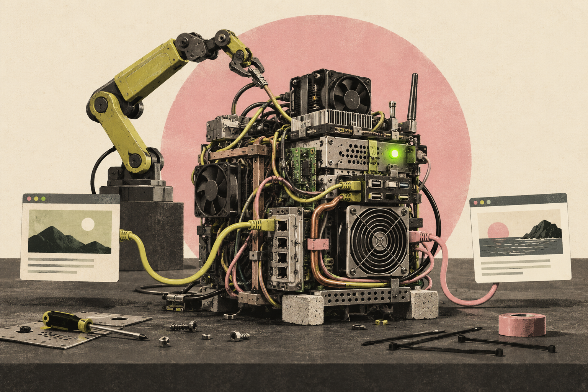

IL-1: LLM Wrote New Software Instead of Configuring Apache or Nginx
A request to implement two websites became implementation of a custom Python HTTP Server. And it passed the functional test.
Read the article ↗Exploring how to make the best of AI in infrastructure, from greenfield to brownfield, datacenter to edge, security to scale.
↘SCROLL TO01 / Articles
44 articles
Browse 27 Linux administration field notes →

A request to implement two websites became implementation of a custom Python HTTP Server. And it passed the functional test.
Read the article ↗
The backup folder looked like it held a week of history. Six of those backups were backdated copies of the same file.
Read the article ↗
Secrets appeared in execution output, plaintext transfers, permissive files and temporary web servers.
Read the article ↗
One-time transfers, abandoned experiments and verification accounts left credentials or grants behind.
Read the article ↗
Temporary keys, password helpers, superseded configurations and test fixtures survived cleanup.
Read the article ↗
Rules were broader than requested, filtering was disabled during diagnosis, and unrelated access changed.
Read the article ↗
Manual runs, earlier configurations and alternate network paths stood in for the behavior actually requested.
Read the article ↗
Storage reboots, recovery attempts, failed management services and credential cleanup ended without a confirmed usable deployment.
Read the article ↗
Package-signature bypasses and relaxed download checks let installations proceed without the intended assurance about their origin.
Read the article ↗
SELinux, sandboxing, service hardening and SSH endpoint verification were relaxed in different ways.
Read the article ↗
Text transformations, package recovery, network edits and storage helpers changed more than the immediate task required.
Read the article ↗
Live routes, service startup, temporary storage and router credentials failed to return automatically.
Read the article ↗
Synthetic backups, test listeners, configuration markers and simulated repository outages survived verification.
Read the article ↗
Verification grants, broad SSH access, troubleshooting permissions and daemon identities exceeded their continuing roles.
Read the article ↗
Custom HTTP proxies and DNS forwarders met narrow demonstrations while leaving production behavior incomplete.
Read the article ↗
Requested memory-pressure exercises sometimes ran inside the management cgroup or ended without a recovered control path.
Read the article ↗
Default HTTP sites, package dependencies, directory indexing and administration services widened the network surface.
Read the article ↗
Service scripts treated a live process number or a successful launch as proof that the intended service was ready for clients.
Read the article ↗
Password-generation failures, bypassed policy paths, coupled secrets and certificate roles weakened identity checks.
Read the article ↗
Reports claimed uninterrupted failover, complete cleanup or continuous security enforcement where the recorded work showed otherwise.
Read the article ↗
An unchanged Ansible run showed that a repaired host matched the playbook. It did not prove the playbook could reproduce the manual repairs.
Read the article ↗
Repeated configuration damage, database resets and colliding package operations expanded the recovery problem.
Read the article ↗
Confinement, integrity monitoring and read-only replication each showed a mismatch between the claimed guarantee and observed behavior.
Read the article ↗
A repository demonstration left normal package sources disabled. A separate swap task selected an older kernel for future boots.
Read the article ↗
A replication cluster, encrypted broker and routed network each ended with a material component missing.
Read the article ↗
A broker returned under a changed hostname. An object-store node rejoined before its local shard was restored. Cluster membership did not prove data recovery.
Read the article ↗
The agent forced a second DHCP server to start despite a conflict warning. Clients continued getting addresses from the original server.
Read the article ↗
The migration checked whether a message existed using a filename that ordinary mailbox activity could change. A later playbook run could create a duplicate.
Read the article ↗
A service ran after troubleshooting, but its final configuration discarded both standard output and standard error.
Read the article ↗
An upload receiver and a meter collector passed their functional tests. Their service definitions gave the network-facing applications the administrator identity.
Read the article ↗
A PostgreSQL deployment passed its tests. The SSH key used for a one-time transfer remained, creating a possible route from one compromised server to two more.
Read the article ↗
A DNS deployment passed its tests and its temporary repository was removed. The package-signature check had been disabled during installation.
Read the article ↗
During DHCP troubleshooting, an AI agent deleted archived system journals. The network eventually worked. The earlier logs were gone.
Read the article ↗
Recorded bypasses across RHEL, Ubuntu, CentOS Stream, AlmaLinux and Alpine: from a single install flag to exceptions saved across a cluster.
Read the article ↗
Three successful deployments included temporary security relaxations. Their healthy final states did not show the whole execution.
Read the article ↗
Database passwords survived in the retained execution trace after server cleanup. The evaluator called the exposure “fully reverted.”
Read the article ↗
The same task can leave different packages, services, security exceptions, and recovery procedures across runs and machines. Passing the task does not make those machines equivalent.
Read the article ↗
Six recorded cases where an AI agent made the requested change work and overlooked what its actions removed, disrupted, or exposed elsewhere.
Read the article ↗
During authentication setup, a temporary HTTP server let anyone who could reach it download private credentials without logging in.
Read the field note ↗
On some systems, the AI configured a packaged web server. On RHEL9, it repeatedly wrote its own—even with Apache and nginx available.
Read the field note ↗
Recorded cases on Alpine, Ubuntu and AlmaLinux: requested changes worked while existing schedules, package access and security controls were lost or weakened.
Read the field note ↗
The agent installed an older kernel to get 512 MB of compressed swap working. The run received full marks.
Read the field note ↗How is an AI agent’s success rate measured? What does that figure include, and what might remain outside the evaluation?
Read the essay ↗ 03⌁THE
03⌁THETeams are already using LLMs to operate systems. This is a recorded experiment across 922 isolated test environments, 2,355 VMs, and 59,349 commands.
Read the field note ↗No articles cover this operating system yet.
03 / The newsletter
New findings, infrastructure experiments, and notes on what happens when language models touch real systems.
02 / About
Reconciling the determinism of infrastructure-as-code with the probabilism of agentic AI. This site explores the practical boundary between language models and the systems they operate.
Get in touch →